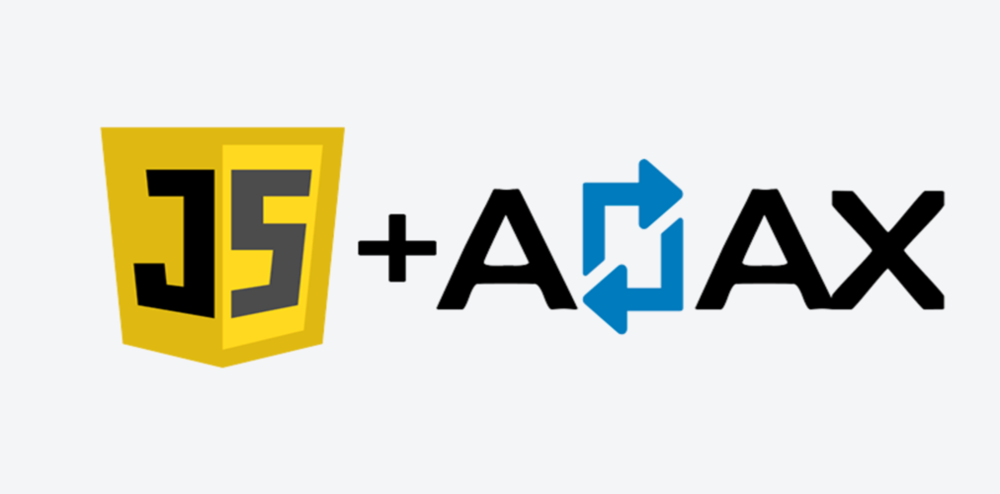
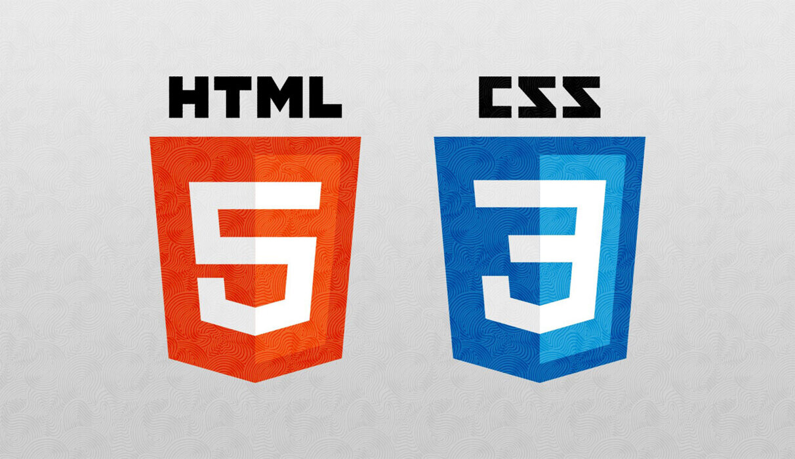

1. Логотип Java(слева) и
логотип JavaScript(справа)
Многие люди, даже не имеющие никакого отношения к IT-сфере, слышали слово Java.
Революционный
независимый от платформ язык, на котором активно пишут приложения для мобильных
систем.
Он был
разработан перспективной компанией Sun, которая затем перешла «под крыло» Oracle. Но
ни
та, ни
другая компании не имеют никакого отношения к JavaScript:
От Sun потребовалось лишь разрешение на использование части названия. Удивительно,
но JavaScript
вообще не принадлежит ни одной фирме.
При написании веб-приложений, программирование на JavaScript используется наиболее
часто. Если
кратко перечислить ключевые особенности данного языка, то следует выделить
следующее:
Объектно-ориентированность. Выполнение программы представляет
собой взаимодействие объектов;
Приведение типов данных проводится автоматически;
Функции выступают объектами базового класса. Эта особенность
делает JavaScript похожим на многие функциональные языки программирования, такие
как Lisp и
Haskell;
Автоматическая очистка памяти. Так называемая, сборка мусора
делает JavaScript похожим на C# или Java;
Если говорить о сути применения JavaScript, то этот язык позволяет «оживлять»
неподвижные страницы сайтов с помощью кода, который можно запустить на исполнение
(так называемые, скрипты). То есть, можно провести аналогию с мультфильмами, где
html и css– это прорисованные герои, а JavaScript – это то, что заставляет их
двигаться.
Сфера применения
Для того чтобы понять, зачем нужен JavaScript, и насколько необходимо его изучение,
следует выделить некоторые области, в которых применяется данный язык
программирования.
Разработка веб-приложений. Хотите установить простой
счетчик, организовать передачу данных между формами или поместить на своем сайте
игру? Тогда JavaScript выступит верным помощником в этом деле;
«Активное участие» в AJAX. Эта технология позволила
значительно ускорить работу приложений, осуществляя обмен данными с сервером в
«фоновом» режиме:

2. AJAX
Операционные системы. Возможно, кто-то не знал, но
Windows, Linux и Mac имеют своих браузерных конкурентов, львиная доля кода
которых написана на JavaScript;
Мобильные приложения;
Сфера обучения. Любая программистская специальность в
университете включает в себя изучение JavaScript в том или ином объеме. Это
обусловлено тем, что язык изначально разрабатывался для не очень сильных
программистов. Уроки JavaScript логически вплетаются в базовый курс HTML,
поэтому освоение проходит достаточно просто.
Преимущества и недостатки
Не стоит думать, что JavaScript – это какая-то панацея от всех проблем, и каждый
программист с улыбкой на лице пользуется этим языком. Всё на свете имеет свои
положительные и отрицательные стороны. Для начала, отметим недостатки.
Необходимость обеспечивать кроссбраузерность. Раз уж
JavaScript выступает как интернет-технология, то приходится мириться с
правилами, которые устанавливает всемирная паутина. Код должен корректно
выполняться во всех, или хотя бы самых популярных, браузерах;
Система наследования в языке вызывает трудности в
понимании происходящего. В JavaScript реализовано наследование, основанное на
прототипах. Люди, изучавшие другие объектно-ориентированные языки
программирования, привыкли к привычному «класс потомок наследует родительский
класс». Но в JavaScript такими вещами занимаются непосредственно объекты, а это
не укладывается в голове;
Отсутствует стандартная библиотека. JavaScript не
предоставляет никаких возможностей для работы с файлами, потоками ввода-вывода и
прочими полезными вещами;
Синтаксис в целом затрудняет понимание. Красота кода –
явно не конёк JavaScript, но главное правило программистов соблюдено: «Работает?
Не трожь!».
Преимущества:
JavaScript предоставляет большое количество возможностей
для решения самых разнообразных задач. Гибкость языка позволяет использовать
множество шаблонов программирования применительно к конкретным условиям.
Изобретательный ум получит настоящее удовольствие;
Популярность JavaScript открывает перед программистом
немалое количество готовых библиотек, которые позволяют значительно упростить
написание кода и нивелировать несовершенства синтаксиса;
Применение во многих областях. Широкие возможности
JavaScript дают программистам шанс попробовать себя в качестве разработчика
самых разнообразных приложений, а это, безусловно, подогревает интерес к
профессиональной деятельности.
Не стоит обращать внимание на то, что минусов получилось больше, чем плюсов.
JavaScript прочно закрепился в своей нише, и никакая критика его оттуда на данный
момент не выбьет.
Для тех, кто хочет изучать
Сложный и длинный путь предстоит тем, кто решил основательно изучить JavaScript.
Для начинающих существуют базовые рекомендации, следуя которым, можно
значительно упростить свое обучение.
Прежде всего, HTML. Нельзя начинать делать что-либо
для интернета без основы основ. Каскадные таблицы стилей (CSS) также очень
сильно пригодятся;
Использовать новую литературу. Программирование – это
не физика, законы которой нерушимы, а новые учебные пособия – это урезанные
старые. IT-технологии постоянно развиваются, и не стоит пренебрегать
полезными обновлениями;
Стараться самостоятельно писать все участки программы.
Если что-то ну совсем не получается – можно позаимствовать чужой код, но
лишь предварительно уяснив для себя каждую строчку;
Комментируйте. Этот пункт вдогонку к предыдущему;
Наблюдайте за опытными людьми. Видеоуроки дают
возможность увидеть создание программ. Это даже лучше, чем лекции в
университете, ведь запись можно в любой момент остановить и повторить снова;
Таким образом, можно утверждать, что JavaScript получил широкое распространение
в сфере веб-программирования, вобрав в себя возможности объектно-ориентированных
и функциональных языков. Несмотря на несколько неудобный синтаксис, JavaScript
активно применяется в учебных программах.
Для новичков важно помнить, что язык – это всего лишь инструмент, а главное в
программировании – мысль.
Обучающие материалы

HTML — стандартизированный язык разметки документов для просмотра
веб-страниц в браузере. Веб-браузеры получают HTML документ от сервера
по протоколам HTTP/HTTPS или открывают с локального
диска, далее интерпретируют код в интерфейс, который будет отображаться
на экране монитора.
CSS — формальный язык описания внешнего вида документа, написанного
с использованием языка разметки.
JavaScript — мультипарадигменный язык программирования. Поддерживает
объектно-ориентированный, императивный и функциональный стили.
Является реализацией спецификации ECMAScript. JavaScript обычно
используется как встраиваемый язык для программного доступа к
объектам приложений.
React — JavaScript-библиотека с открытым исходным кодом для
разработки пользовательских интерфейсов. React разрабатывается и
поддерживается Facebook, Instagram и сообществом отдельных
разработчиков и корпораций. React может использоваться для
разработки одностраничных и мобильных приложений.